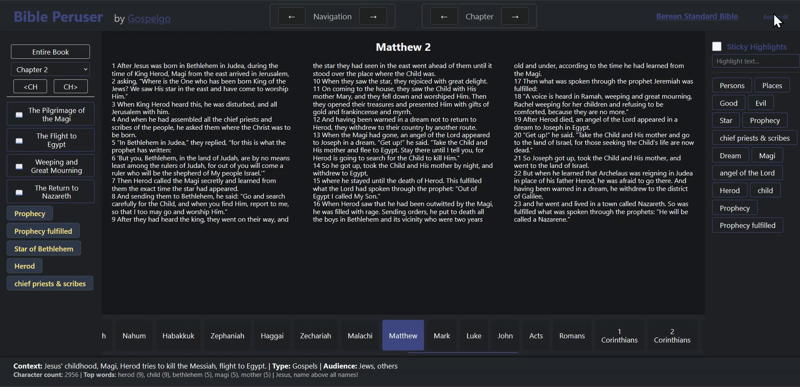
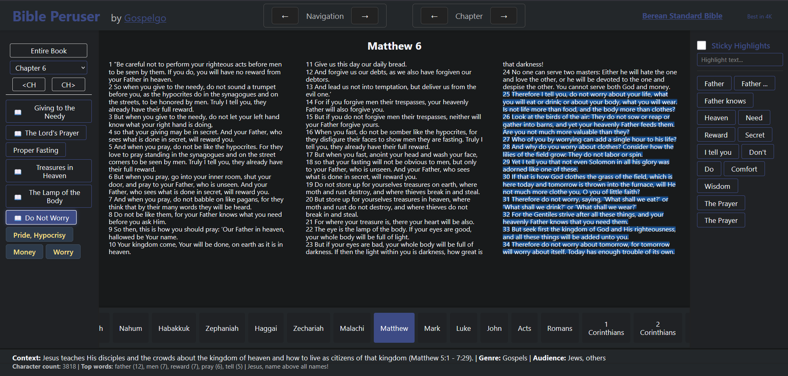
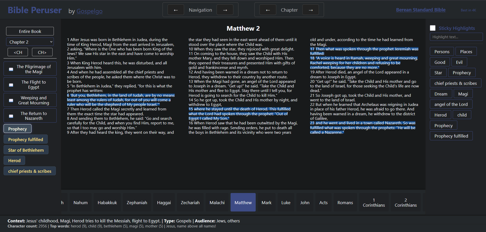
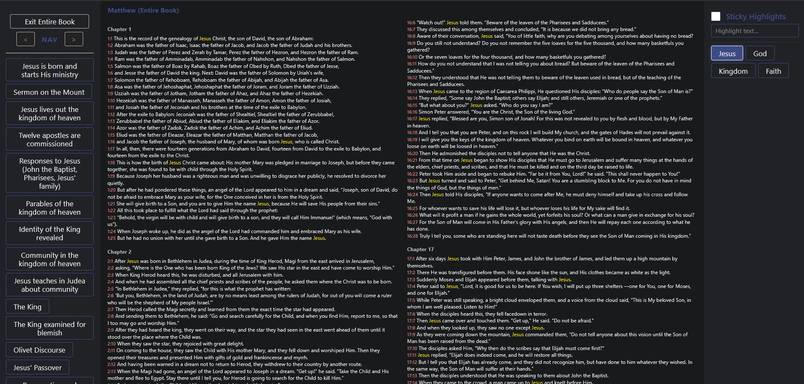

Interactive
Inteactive exploraton of each chapter of the Bible according to theme, topic, type or anything that adds understanding to the text.
Bible Peruser
Highlight text by outline, theme, label, or other categorization.
Study the bible chapter by chapter. Visit Bible Peruser
Bible Peruser uses the Berean Standard Bible (BSB) translation including their open source datasets .
Inteactive exploraton of each chapter of the Bible according to theme, topic, type or anything that adds understanding to the text.
Bible Peruser
Chapter outlines parsed from the Berean Standard Bible dataset. Click the button to highlight each section.
Bible Peruser
Gospelgo developer adds custom labels and highlights as insights during daily Bible study. How long will it take to get through the entire Bible?
These are not intended to be theological statements but simply observations that may add understanding to the text.
Bible Peruser
Book view is available from each chapter and shows the entire book with book-level outline, labels and highlights. This helps to see how each chapter fits into the big picture of the book.
Bible Peruser